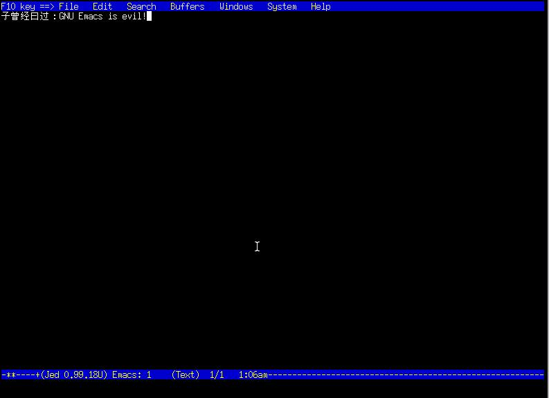

jed——文本编辑器中的小李飞刀
子曾经曰过：世界上有三种人,一种用Vi,另一种用Emacs,剩下的是第三种人
这句话囊括了文本编辑的三种风格：
Vi风格是最具有操作感的，也是最畅快的……在不使用中文输入法的情况下
(Vi对输入法说：我本来是比Emacs高一点点的，但是有了你这个累赘，Emacs就比我高一点点了)
Emacs风格操作十分别扭，可以说是手指的瑜伽……可是效率也挺高，还能舒筋活血，最大的优势是通用
剩下的这种风格，容易学习，但效率低下……XXXPad、XXXEditor都是这种风格，不提也罢
显然，对于使用中文的各位同学来说，Emacs的文本编辑风格，是不二的选择
另一个子这样曰过： GNU Emacs is evil！
虽然这话不代表本人观点
但是动用Emacs来编辑某某只有几行的小文件
……这简直和擎着青龙偃月刀杀鸡一样的行为艺术
现在隆重推荐一下jed，它可以媲美小李飞刀，实在是杀人越货，杀鸡取卵，居家必备，馈赠亲友的极品

它支持中文，默认使用Emacs风格的键绑定，配置简单，速度称得上迅雷不及掩耳盗铃
被Emacs摧残着的同学不妨试试
- jed的默认配置文件为/usr/share/jed/lib/jedrc 里面有详细的说明
- 取消这个注释
%enable_top_status_line (0);
可以屏蔽jed的菜单 -
有些Emacs的组合键和jed菜单组合键冲突
例如Alt+f在Emacs中应该是“前进一个单词”，而在jed中则是“文件菜单”
想使用Emacs风格的组合键的话，编辑/usr/share/jed/lib/menus.sl
找到如下段落：unset_setkey ("select_menubar", "\em"); unset_setkey ("@\emF", "\ef"); unset_setkey ("@\emE", "\ee"); unset_setkey ("@\emo", "\eo"); % Mode menu unset_setkey ("@\emS", "\es"); unset_setkey ("@\emB", "\eb"); unset_setkey ("@\emi", "\ei"); unset_setkey ("@\emH", "\eh"); unset_setkey ("@\emy", "\ey");
可以根据自己的需要修改，也可以简单的注释掉；使用菜单可以用F10键 - jed还有X版本xjed和Windows版本wjed